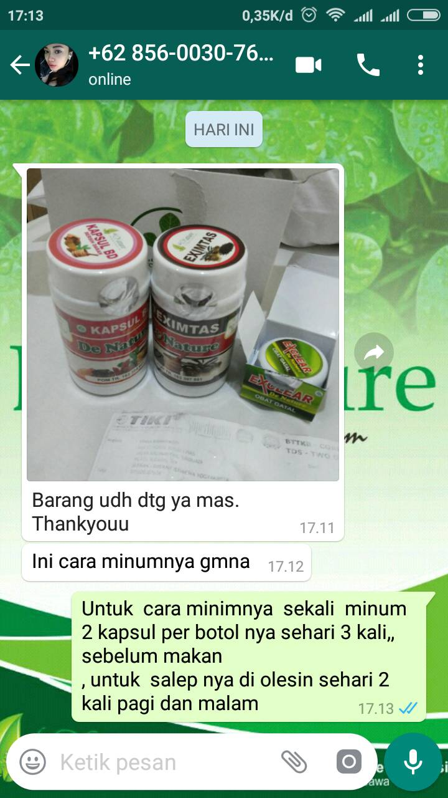

|
SOLUSI MENGOBATI PENYAKIT AMBEIEN / WASIR
Apakah Penyakit Wasir Anda Semakin Bermasalah ?
Jika penyakit wasir anda sudah semakin bermasalah, maka dokter biasanya akan mungkin menyarankan operasi.
Tapi kita tahu bahwa operasi wasir ini biasanya mahal dan menyakitkan. Mari kita lihat dibawah ini merupakan beberapa jenis Operasi Wasir:
SKLEROTERAPI
Jika Anda menderita penyakit ini yang sudah berada pada stadium awal, biasanya dokter akan menyararankan satu metode pengobatan berupa memasukkan tabung ke dalam lubang anus supaya dapat memberikan pandangan yang baik dari daerah yang terkena.
Selain itu, sebuah solusi kimia pengerasan akan diberikan melalui suntikan ke dasar wasir. Tidak ada rasa sakit selama jarum diarahkan dengan benar. Namun sebagai akibat dari peradangan larutan kimia akan menyebabkan jaringan parut pada bentuk pembuluh darah mengeras dan memotong suplai darah ke wasir.
Jenis operasi ini hanya solusi sementara dan disertai dengan ketidaknyamanan serta nyeri minor. Dalam hampir semua kasus wasir Anda akan muncul kembali dalam waktu 12 bulan.
HEMORRHOIDECTOMY
Dokter Anda mungkin menyarankan jenis operasi hemeroid ketika daerah dubur telah menjadi wasir thrombosed untuk berkembang melalui gumpalan.
Jenis operasi ini biasanya tersedia secara rawat jalan tetapi bisa sangat menyakitkan jika dilakukan 4-5 hari setelah bekuan telah terbentuk.
Sedangkan anestesi lokal akan diberikan untuk membuat area kebas setelah dokter akan membuat sayatan di sekitar daerah anus dan memotong wasir.
Dan biasanya sampai penyembuhan telah berakar penderita akan mengalami ketidaknyamanan dan rasa sakit melalui jahitan yang akan diperlukan. Efek samping dari jenis operasi ini bisa meliputi:
- Pendarahan & Infeksi
- Kesulitan buang air kecil karena sakit
- Ketidakmampuan untuk bersantai
- Biasanya selama pemulihan pada daerah yang terkena selama 26 minggu akan disertai dengan rasa sakit selama periode ini.
LIGASI KARET BAN
Dalam Operasi ini, aliran darah diputus oleh karet gelang dan diikat ke dasar wasir. Dokter akan memasukkan alat yang disebut anoscope dalam anus Anda, untuk mencari dan memahami dimana wasir tersebut.
setelah karet gelang ditempatkan di dasar akan membuat wasir menyusut dan rontok dalam waktu sekitar seminggu.
Anda mungkin akan membutuhkan suntikan mati rasa pada daerah yang terasa sakit hebat, dan ini merupakan hal normal jika anda memilih operasi sebagai pengobatan.
TAHUKAH KAMU BAHAYA TINGKATAN STADIUM PENYAKIT INI?
Stadium 1 :
merupakan penyakit wasir yang terjadi dengan munculnya tonjolan yang masih kecil dan belum keluar. Gejalanya adalah darah yang menetes setiap Anda selesai buang air besar.
Stadium 2 :
tonjolan yang sudah keluar namun ukurannya sedang. Gejalanya muncul jika selesai buang air besar, dan tonjollannya keluar namun setelah itu masuk kembali dengan sendirinya.
Stadium 3 :
ukuran dari tonjolan yang keluar tadi lebih besar dan gejalanya dirasakan setelah buang air besar. Tonjolan ini memerlukan bantuan tangan untuk membantu memasukkannya lagi.
Stadium 4 :
tonjolan ini besarnya bisa sampai seukuran bola tenis. Dan tonjolan ini tidak bisa masuk walaupun sudah didorong dan cara mengobati wasir untuk stadium ini adalah dengan melakukan operasi.
DIMANA BENJOLAN AMBEIEN SERING DITEMUKAN ?
Internal Hemorhoid:
Ambeien/Wasir ini muncul di dalam saluran rektum Anda. Biasanya internal hemorrhoid tidak nyeri tapi menyebabkan BAB berdarah. Pada gejala ini hampir semua orang bisa mengalami BAB berdarah, hal ini terjadi karena beberapa faktor seperti, sering makan pedas, makanan bersantan, kurang minum air mineral dll.
Internal Hemorhoid:
Ambeien/Wasir ini terletak di luar anus dan mungkin terasa gatal atau nyeri, terkadang bisa robek dan berdarah. Pada gejala wasir luar ini biasanya itu lanjutan dari wasir internal, yang awal mulanya memiliki wasir internal dan karena tidak kunjung di obati menjadi bertambah parah dan menjadi gejala wasir luar.
APA YANG ANDA RASAKAN KETIKA TERKENA PENYAKIT WASIR ?
Apa yang anda rasakan ketika Terkena Penyakit Wasir/Ambeien Luar ataupun Dalam ? Mungkin sebagian besar sebagai berikut:
- Risih
- Malu bergaul dengan teman
- Sulit beraktifitas seperti biasa
- BAB terasa sakit
- Gatal di area sekitar anus
- BAB berdarah
APA SAJA USAHA SUDAH ANDA LAKUKAN SELAMA INI ?
Apa Saja Yang Sudah Anda Lakukan Selama ini Untuk Menghilangkan Penyakit Tersebut ?
- Konsumsi Berbagai Macam Obat Namun Tak Kunjung Sembuh ?
- Disarankan Untuk Operasi Tapi Takut ?
REKOMENDASI KHUSUS!
SOLUSI UNTUK ANDA 1 PAKET OBAT HERBAL AMBE JOSS DAN SALEP SALWA
AMBE JOSS SALWA Terbuat dari bahan herbal pilihan yang berkualitas dengan komposisi yang bagus untuk penderita wasir ambeien luar ataupun dalam serta terdaftar di BPOM RI dengan nomor POM TR sebagai berikut:
- Ambe Joss : POM TR. 163 395 051
- Salep Salwa : POM TR. 183 718 641
KANDUNGAN AMBE JOSS DAN SALEP SALWA
KAPSUL AMBE JOSS terbuat dari bahan-bahan herbal berkualitas yang terdiri dari Mahkota Dewa, Daun Ungu, dan Kunyit Putih. Ketiga bahan herbal ini mempunyai kandungan yang sangat dahsyat untuk menyembuhkan wasir tanpa operasi.
SALEP SALWA adalah salep herbal yang digunakan untuk mengobati benjolan wasir atau ambeien disekitar anus. Biasanya dipakai bagi penderita wasir stadium 2-4. salep ini terbuat dari bahan bahan alami berkhasiat yang sangat aman digunakan seperti propolis murni, daun binahong, dan minyak zaitun, Dan di kombinasikan dengan AMBEJOSS pengobatan Dari dalam.
Salwa ini berbentuk salep sehingga dalam pemakaianya dilakukan dari luar sehingga benjolan akibat ambeien tersebut dapat mengempes dengan sendirinya tanpa perlu dilakukan operasi. biro obat wasir de nature ambejos dan salep salwa.
Beli produk yang asli hanya disini
APA YANG MEREKA KATAKAN TENTANG AMBE JOSS ?
DOKUMENTASI RESMI AMBE JOSS DAN SALEP SALWA
Beli produk yang asli hanya disini
DOKUMENTASI PENGIRIMAN SUKSES PRODUK


DAPATKAN PRODUK ASLI DAN BERKUALITAS
Beli produk yang asli hanya disini
CARA PEMESANAN PRODUK
- Sebutkan Nama & Alamat lengkap Anda
- Sebutkan Jumlah Produk yang Anda pesan
- Sebutkan Bank Admin untuk Transaksi
Contoh Pemesanan:
Siti Aisyah – Jl.Sukarno Hatta No.01 Bandung, Jawa Barat – Pesan 3 Box LabdaWARA – Via BRI
Selanjutnya :
- Kami merespon WA/SMS Anda berapa total nominal produk berikut ongkos kirim ke kota Anda.
- Mengkonfirmasikan Nomor Rekening untuk transaksi.
- Mengirimkan Produk pesanan Anda via Jasa Kurir terpercaya: JNE, J&T, TIKI, atau POS INDONESIA.
- Garansi produk PASTI sampai ke tangan Anda.
- GRATIS konsultasi Kesehatan!
|